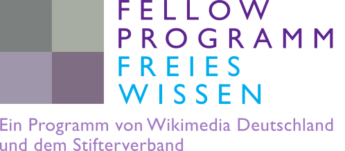

2017
Habitat and extinction risk
We compared the extinction risk of species from different habitat types. We found that the influence of the habitat type seems to have shifted and was different in the past, where species that were associated with flowing water bodies showed a lower extinction risk than species from e.g. ponds, which is contrary to todays situation. Find all the results in Tietje & Rödel 2017
Fellow Program Open Science
Besides bridging the gap between the fossil record and current biology in my PhD work, I am interested in different concepts of Open Science. This website was initialized as part of my work as a fellow in the Open Science Fellow Program. Launched for the first time in 2016 by Wikimedia Germany and Stifterverband the fellow program enables 10 scientists from different areas to open up their research by providing guidance and financial support.

I created this website as part of my work in the Open Science Fellow Program. Open Science needs communication, and what better way could there be than making your science explorable online? While learning to use GitHub, I stumbled across GitHub Pages, which resulted in this webpage.
As part of my project in the fellow program, I concentrate of the aspects reproducibility, community feedback and open publishing. If you are looking for inspiration on how you can make your own research more open, the Vienna Principles offer some ideas.
Video summary of the project (German):
Reproducibility
Making your research reproducible is part of good scientific practice. Therefore, I want to publish the R scripts used in my analysis together with the data and the manuscript. This can be part of the electronic supplement but can also be hosted independently on GitHub.
Community feedback
Getting feedback on your work when it comes to peer review is good, but getting feedback even earlier, while it is still in progress, might speed up the whole process. Reaching out to your research community gets you valuable tips on your work. However, this costs time (as building this webpage for example). Therefore a part of my project is the evaluation of opening up your research in terms of costs and benefits.
Open publishing and preprints
Publishing my work in an open access journal will be the last milestone in this project, but before that I plan on something way more interesting. I want to test preprint and preprint servers, which is something that, for biology or paleontology, is sparsely used in my surroundings. Finding the right preprint server to adress the right crowd as well as responding to hopefully plenty of feedback will be valuable experiences and will likely add to quality and make the publication process a bit easier in the end.
Another option in the peer review process is aiming at a journal that offers open peer review, which is getting more and more common and adds to the transparency in the review process.
This page is licensed

2019 Melanie Tietje
Last update: